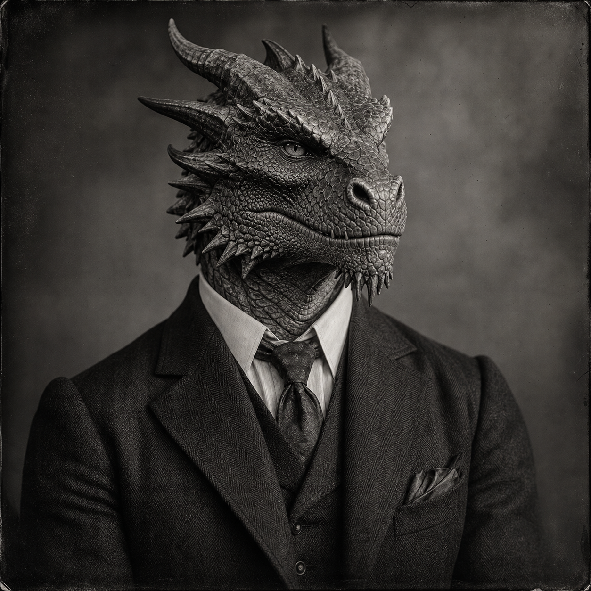

Siegfried Vane
(375 Points)
Male; Age 36; 6'1", 235 lbs; Male Dragonborn, age 36, 6 foot 1, 235 lbs.; bronze-red scales, horned brow, ember eyes, sharp teeth, heavy hands, and a reptilian stillness that becomes almost human only when the glamour amulet is active.
| ST: 14/12 [45] | IQ: 16 [80] | Speed: 6.50 |
| DX: 14 [45] | HT: 12/14 [20] | Move: 6 |
| Dodge: 7 | Parry: 10 |
Advantages
Absolute Direction [5]; Alertness +1 [5]; Combat Reflexes [15] (Fright Check: 19); DR 8 (Everything) [24]; DR 15 (Fire) (Occasional) [15]; Eidetic Memory 2 [60]; High Pain Threshold [10]; Luck [15]; Magery 3 [35]; Patron (Followers of the Right Hand) (15 or less) [60] (Equipment: Standard, +5; Special Qualities (Access to Magic in Non-magical World): Very Unusual, +10; Secret: -5; Subtraction (Minimal Intervention): -5); Strong Will +1 [4] (Will: 17); Lang: English (Native) [0]; Lang: French (Native Spoken/Native Written) [6]; Lang: Latin (Broken Spoken/Accented Written) [3].
Disadvantages
Duty (Followers of the Right Hand) (15 or less) [-25] (Involuntary: -5; Subtraction (Extremely Hazardous): -5); Enemy (Unknown Enemies of FRH) [-60] (Unknown: -5; Subtraction (Access to Magic in Non-magical World): -15); Monstrous [-25] (Reaction: -5); Nightmares [-5]; Secret (Dragonborn under glamour) [-20]; Secret Identity (Siegfried Vane's human face is a glamour) [-10].
Quirks
Keeps spare gloves and collar pins for emergency concealment; Smokes when thinking even though the heat bothers his scales; Talks to his amulet before hard cases; Collects old hotel matchbooks from solved cases; Hates being touched unexpectedly. [-5]Powers
Dragon Amulet 18(3) (Illusion) [29] (Breakable: DR<=15/HP<=75, -15%; Can Be Hit: -6 Penalty, -10%; Can Be Stolen By: Stealth or Trickery, -10%; Animate Illusions: +20%; Move Illusions: +20%; Range: -3; Touch Only: -20%).
Skills
Acting-17 [1]; Area Knowledge (New York City)-17 [½]; Detect Lies-16 [1]; Diplomacy-15 [½]; Disguise-17 [1]; Fast-Talk-17 [1]; First Aid/TL6-17 [½]; Gesture-17 [½]; Guns/TL6 (Pistol)-15 [½]; Hidden Lore (Supernatural Creatures)-16 [½]; Interrogation-16 [½]; Intimidation-16 [½]; Occultism-18 [1½]; Psychology-16 [1]; Research-16 [½]; Shadowing-16 [½]; Staff-14 [4] (Parry: 10); Spell Throwing (Ball)-16 [4]; Stealth-14 [2]; Streetwise-16 [½]; Thaumatology-18* [1].
*Cost modifiers: Magery.
Spells
Blur-19; Keen Eyes-19; Night Vision-19; Dark Vision-19; Infravision-19; Light-19; Continual Light-19; Seek Fire-19; Complex Illusion-19; Create Fire-19; Darkness-19; Detect Magic-19; Explosive Fireball-19; Fireball-19; Heat-19; Ignite Fire-19; Invisibility-19; Mage Sight-19; Perfect Illusion-19; See Invisible-19; Sense Emotion-19; Sense Foes-19; Shape Fire-19; Simple Illusion-19; Sound-19; Truthsayer-19.
Equipment
Boots, Leather (PD 2, DR 2; 4 lbs.; $10); Cigarette Lighter ($1); First Aid Kit, Individual (2 lbs.; $6; +1 to First Aid); Flashlight (1 lb.; $2); Hat, Slouch ($1; TL: 6); Lockpicks (good; $200; Skill: 12); Playing Cards ($½); Powerstone (Strength 5; $1,240); Smith & Wesson Military & Police .38 Special (cr 2d-1, Skill: 15; 2 lbs.; $30; Malfunction: crit.; SS: 10; Acc: 2; Half DMG: 120; MAX: 1500; RoF: 3~; Shots: 6; ST: 8; Rcl: -1; TL: 6).Description
Siegfried Vane lives under a glamour because the world he moves through has never offered him a safer alternative. Beneath that mask is a body no polite city would know how to tolerate calmly: scales with a bronze-red cast, ember-bright eyes, a horned brow, and the unmistakable fact of blood that was never meant to pass for ordinary humanity. Yet concealment has never made him ordinary in spirit. Even hidden, he carries himself with the dangerous self-command of someone who knows exactly how much force he keeps leashed, and exactly what it costs to remain legible inside a society built for smaller truths.That tension is what makes him more than a dragonborn analogue dropped unchanged into another setting. Siegfried belongs in FRH because the world has to answer what draconic inheritance means when it appears under urban smoke, lies, glamour, and investigation instead of open myth. He is proud, vigilant, and civilized in the hard sense of the word. He did not become disciplined because life was gentle. He became disciplined because without discipline he would have been reduced to spectacle, hunted out of the rooms he needed, or surrendered to the hotter, simpler interpretation other people would happily impose on him.
His power therefore reads in layers. There is the physical truth of the body, the sorcerous truth of old fire and command, and the social truth of glamour as survival. Siegfried is not merely a bruiser with scales and not merely a stylish occult aristocrat. He is a man who has had to decide, repeatedly, whether pride will be armor, burden, or vice. In party terms he widens the world: ancient lineages, hidden schools, rival traditions, long roads, ports, estates, and older forms of nonhuman pressure all become more real around him. He can make FRH feel broader, stranger, and more mythically distributed than its most civic and bureaucratic lanes.
For a new companion, Siegfried should read as someone who became controlled because the alternative was catastrophe. He is not asking the world to forgive or celebrate what he is. He is asking it to endure the fact that he exists, that he sees clearly, and that if the mask slips the room will have to reckon with more than one kind of fire.